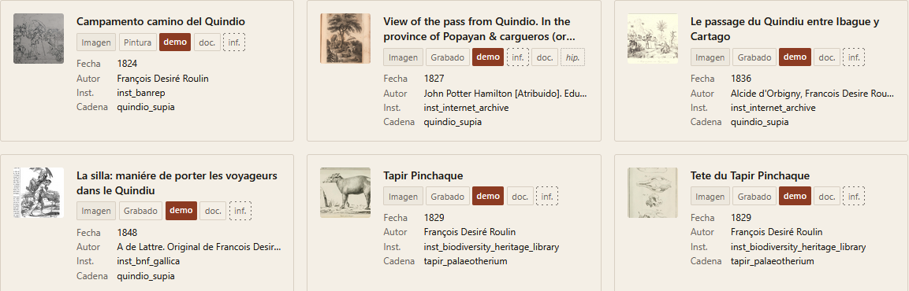
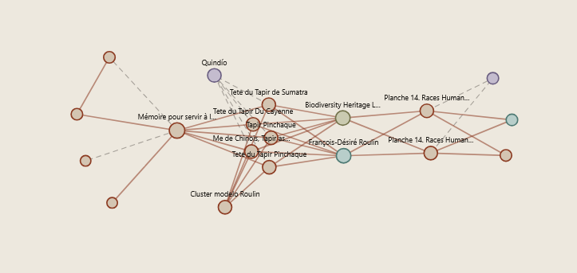
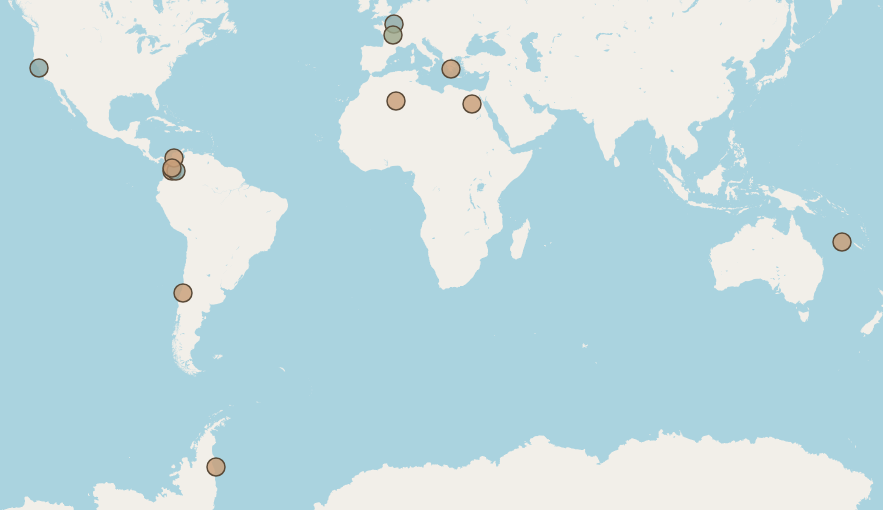
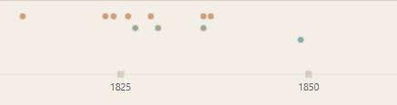

Atlas de mediaciones
Corpus Roulin: imágenes, mediaciones y circulación visual
Este prototipo modela un corpus acotado de fuentes históricas como una red de mediaciones. No busca reunir objetos aislados, sino registrar las relaciones entre imágenes, textos, agentes, lugares, instituciones e instrumentos, distinguiendo grados de evidencia, roles geográficos y capas de reorientación histórica.

Repositorio
Tarjetas de fuentes con filtros por tipo, cadena y confianza.

Grafo
Red de relaciones entre entidades, predicados y grados de evidencia.

Mapa
Geografías de mediación superpuestas por rol de lugar.

Línea de tiempo
Capas históricas del corpus desde el siglo XIX hasta la digitalización.